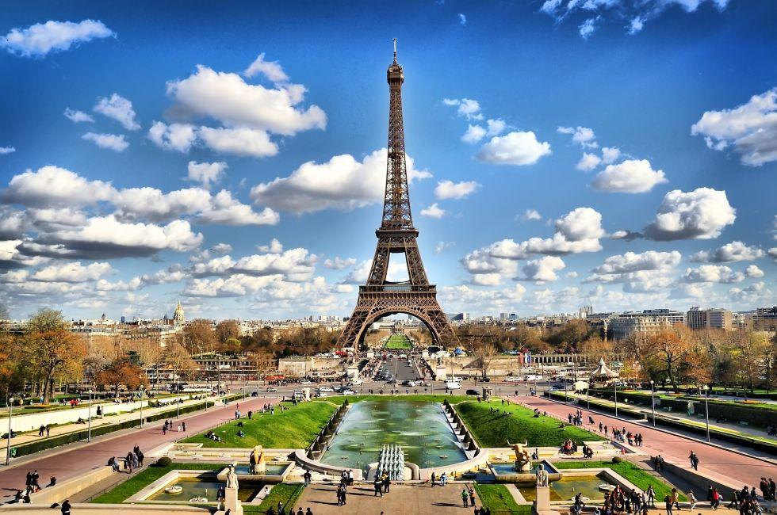
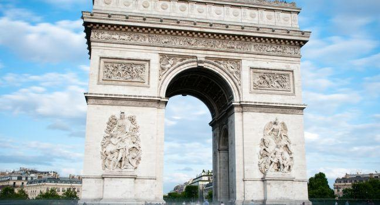
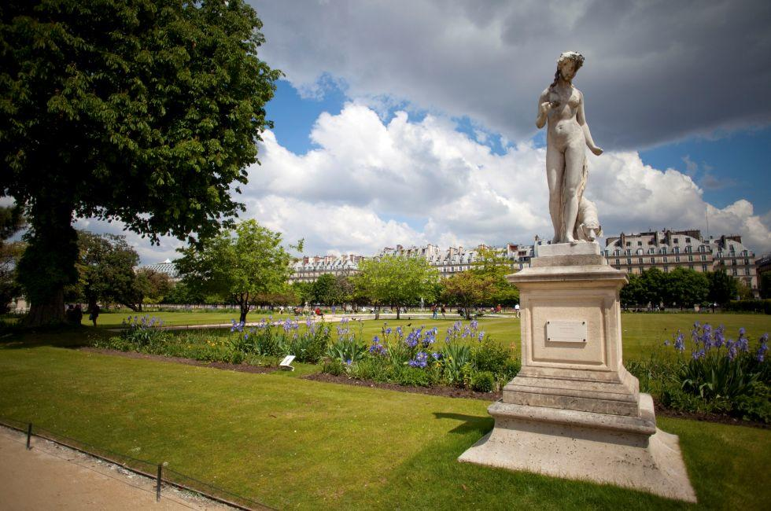
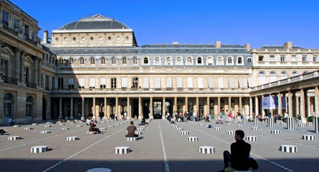
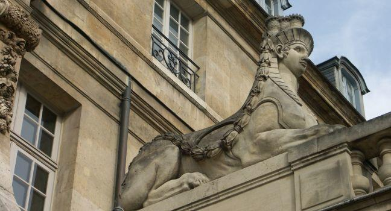
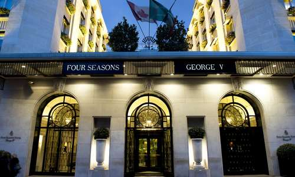

Things To Do -Sight To Visit
Not sure what to do in Paris? We’ve got you covered. Our travel experts compiled the best activities in Paris so you can make the most of your trip.
-

Eiffel Tower Tour
The Eiffel Tower is to Paris what the Statue of Liberty is to New York and what Big Ben is to London: the ultimate civic emblem. French engineer Gustave Eiffel—already famous for building viaducts and bridges—spent two years working to erect this iconic monument for the World Exhibition of 1889.
-

Arc De Triomphe Tour
Inspired by Rome's Arch of Titus, this colossal, 164-foot triumphal arch was ordered by Napoléon—who liked to consider himself the heir to Roman emperors—to celebrate his military successes. Unfortunately, Napoléon's strategic and architectural visions were not entirely on the same plane, and the Arc de Triomphe proved something of an embarrassment. Although the emperor wanted the monument completed in time for an 1810 parade in honor of his new bride, Marie-Louise, it was still only a few feet high, and a dummy arch of painted canvas was strung up to save face. Empires come and go, but Napoléon's had been gone for more than 20 years before the Arc was finally finished in 1836. A small museum halfway up recounts its history.
-

Jardin Des Tuileries
The quintessential French garden, with its verdant lawns, manicured rows of trees, and gravel paths, was designed by André Le Nôtre for Louis XIV. After the king moved his court to Versailles in 1682, the Tuileries became the place for stylish Parisians to stroll. (Ironically, the name derives from the decidedly unstylish factories, which once occupied this area: they produced tuiles, or roof tiles, fired in kilns called tuileries.) Monet and Renoir captured the garden with paint and brush, and it's no wonder the Impressionists loved it—the gray, austere light of Paris's famously overcast days make the green trees appear even greener.
-

Palais-Royal Walking Tour
The quietest, most romantic Parisian garden is enclosed within the former home of Cardinal Richelieu (1585–1642). It's the perfect place to while away an afternoon, cuddling with your sweetheart on a bench under the trees, soaking up the sunshine beside the fountain, or browsing the 400-year-old arcades that are now home to boutiques ranging from quirky (picture Anna Joliet's music boxes) to chic (think designs by Stella McCartney). One of the city's oldest restaurants is here, the haute-cuisine Le Grand Véfour, where brass plaques recall regulars like Napoléon and Victor Hugo.
-

Musee Nationa Picasso-Paris
This immensely popular museum rose phoenixlike in late 2014, when it finally reopened after an ambitious (and often controversial) five-year makeover that cost an estimated €52 million. Home to the world’s largest public collection of Picasso’s inimitable oeuvre, it now covers almost 54,000 square feet in two buildings: the regal 17th-century Hôtel Salé and a sprawling new structure in the back garden that's dedicated to temporary exhibitions. Diego Giacometti’s exclusively designed furnishings in the former are an added bonus.
Things To Do -Where To Eat
A new wave of culinary confidence has been running through one of the world's great food cities and spilling over both banks of the Seine. Whether cooking up grand-mère's roast chicken and riz au lait or placing a whimsical hat of cotton candy atop wild-strawberry-and-rose ice cream, Paris chefs—established and up-and-coming, native and foreign—have been breaking free from the tyranny of tradition and following their passion.
AMORIANO
This tiny storefront restaurant's immense popularity has much to do with the fresh and imaginative food, the friendly servers, and great prices. The lauded Japanese chef works from a small open kitchen behind the zinc bar, putting forth skillfully prepared dishes like lemon-marinated mackerel topped with microthin slices of beet with honey vinaigrette, or succulent duck breast with vegetables au jus.
ASTIER
There are three good reasons to go to Astier: the generous cheese platter plunked on your table atop a help-yourself wicker tray, the exceptional wine cellar with bottles dating back to the 1970s, and the French bistro fare (even if portions seem to have diminished over the years)
ALLÉNO PARIS AU PAVILLON LEDOYEN
Tucked away in a quiet garden across from the Petit Palais, Ledoyen—open since 1779—is a study in Empire-style elegance. Star chef Yannick Alléno injects the three-star dining room with a frisson of modernity by putting fresh farmhouse ingredients front and center in his €295, 10-course tasting extravaganza
BERTHILLON
Parisian ice cream is served at cafés all over town, but it's worth making a pilgrimage to the mecca of artisanal crèmes glacées to understand what all the fuss is about.
DONG HUONG
While not quite a secret, these two undecorated dining rooms on a Belleville side street can be hard to find, but this is where Chinese and Vietnamese locals come for a reassuring bowl of pho (noodle soup) or plate of grilled lemongrass-scented meat with rice. Spicy, peanut-y saté soup is a favorite, and at this price, you can also spring for a plate of crunchy imperial rolls, to be wrapped in accompanying lettuce and mint. Try one of the nonalcoholic drinks; they're surprisingly tasty.
Things To Do -Where To Sleep
Best Hotels in Paris

Four Seasons Hôtel George V Paris